Python
Python was the main programming language used and the project was done in Jupyter Notebook.
What are the factors and features of a listing that make an Airbnb listing more expensive?

Airbnb has provided many travellers a great, easy and convenient place to stay during their travels. Similarly, it has also given an opportunity for many to earn extra revenue by listing their properties for residents to stay. However, with so many listings available with varying prices, how can an aspiring host know what type of property to invest in if his main aim is to list it in Airbnb and earn rental revenue? Additionally, if a traveller wants to find the cheapest listing available but with certain features he prefers like 'free parking' etc, how does he know what aspects to look into to find a suitable listing? There are many factors which influence the price of a listing. Which is why we aim to find the most important factors that affect the price and more importantly the features that is common among the most expensive listings. This will allow an aspiring Airbnb host to ensure that his listing is equipped with those important features such that he will be able to charge a higher price without losing customers. Moreover, a traveller will also know the factors to look into to get the lowest price possible while having certain features he prefers.
The datasets for this project was obtained from kaggle. As the project was part of a data science course, we used the Airbnb dataset for Seattle and analysed the listings in Seattle. The datasets can be obtained here.
As the dataset from kaggle was not very suitable for data analysis, we had to change the format of some data in the dataset. We also had to do separate data preparation for exploratory analysis and machine learning. Some of our data preparation were:
listing_url, scrape_id etc.The main problem was broken into 3 sub-problems each targeting a different aspect of the dataset.
Our first sub-problem was to focus on the physical features and facilities of the property itself. We wanted to see if there were any common features among the highly priced listings. We mainly focused on the listing's room type, the property type, number of bedrooms and common ammenities.
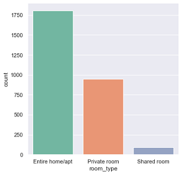As can be seen from the countplot, most of the listings were the entire home/apartment. There are almost twice as many entire home/apartment listings as private room listings. This gives a small insight into the type of listings available and the number of each type.
From the above graph, we can see that there are a lot more listings of apartment and full houses than any other property type in seattle. Together with the earlier discovery that hosts prefer to list their full property than just a room or shared room, it can be inferred that most listings in Seattle are entire apartments or entire houses.
From the above heatmap, with lighter colour representing lower price and darker representing higher price, we can see that shared rooms have the lighest colour hence cheapest. Private rooms have a slightly darker colour so they are in the middle, and entire houses are the darkest thus the most expensive. It is also important to note that the highest number of listings which was house
and apartments actually have very similar prices for each of the room_type category. All of this tells us that the room_type and property_type both play a very important role in the final price of the listing.
From the box plots above, it can be seen that listings have higher prices as the number of bedrooms increase.
The word cloud above was taken from the top 100 listings in terms of their price. We can see that the listings with the highest prices have ammenities such as Washer, Dryer, Heating, Wireless Internet, Smoke Detector, Free Parking, Kid Friendly.
So, an aspiring Airbnb host should ensure that his property contains these ammenities so that he can charge a higher price. Similarly, if a traveller does not require any of these ammenities, he can opt for a listing without them to save cost. Ammenities and their influence into the price will be further explored in depth in the machine learning section of the project.
Our second sub-problem was to focus on the location of a listing. We wanted to see if there were any common neighbourhoods among the highly priced listings.
The map above shows clusters of the different types of listings. Yellow cirles represents entire house/apartments, red circles represent private rooms and blue circles
represent shared rooms. From the points on the map above, we can see that most of the yellow cirles are concentrated in central Seattle. That is, most of the listings
that list the entire house/apartment are concentrated in central Seattle and in particular neighbourhoods like Broadway, Belltown, Fremont, Pikepine Market, Queen Anne.
Additionally, we have already noted that the more expensive listings are those that list the entire property. You can drag around the map and zoom to observe the listings.
From the plots above, we can see that most of the listings appear in Broadway, Belltown, Fremont, East/North/West Queen Anne etc. This gives us a good insight into the potential
neighbourhoods where there are higher number of listings which we can tap into. By analyzing the number of listings and prices for each neighborhood, we can get a clearer understanding
of which neighbourhoods have a lot of expensive listings. Looking at the analysis done so far, we can see that certain neighbourhoods are indeed more 'expensive' than others.
However, some of those neighbourhoods do not have as many listings as other expensive neighbourhoods. Since our problem was to identify factors that make a listing more expensive, we can infer that
these neighbourhoods tend to have more expensive listings. However, a more thorough inference would be to identify neighbourhoods that have both a higher number of listings and higher price as lower
number of listings would mean fewer available listing for a customer to choose.
As such, neighbourhoods such as Belltown, West Queen Anne are neighbourhoods that have a lot of expensive listings. (I'm sorry if the images are blurry, you can see the actual plots in the jupyter notebook.)
Here we wanted to see if there are any relation between sentiment of reviews and the summary of the listing against the price.
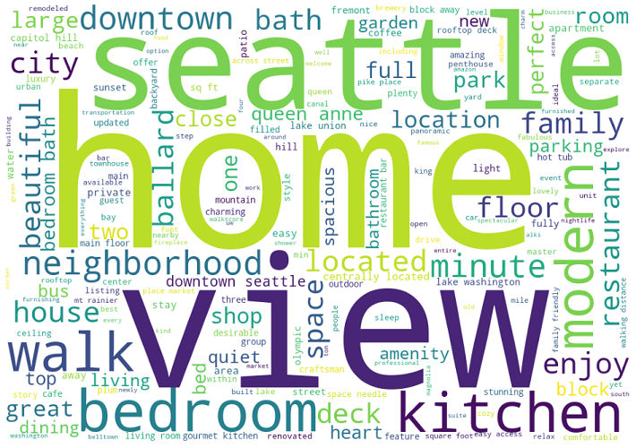
This word cloud shows shows the most frequently used words in the summaries of the top 100 most expensive listings. We can see that they all have particularly 3 words in common: seattle,
home & view. Other words like: kitchen, bedroom, walk, modern also commonly appear in those listings. But could it just be that all listings have these words in their summaries?
To find out, lets also analyze the summaries of the cheapest listings and see if we can infer anything from that.
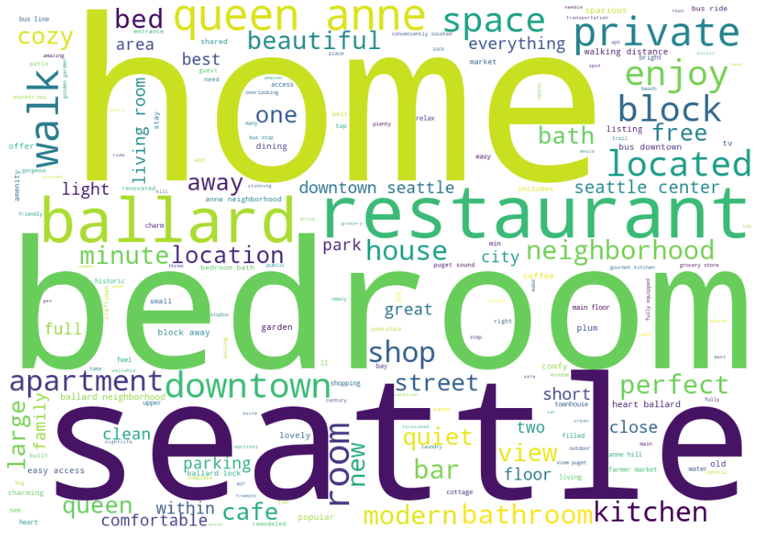
Here we have seen the most common words in the summary of the cheapest listings. As it can be seen from the wordcloud, indeed there are overlapping words with the most expensive listings.
Words like: seattle, bedroom, home appear frequently in both. So they do not tell us anything special. However, words like: view, modern & walk appear more frequently in expensive
listings as opposed to cheaper listings. So it turns out that indeed there are certain words which appear more frequently among expensive listings.
Python's NLTK library was used for the sentiment analysis. From the graphs above, we can conlcude 3 things. First is that most reviews do not have much negativity. Only a few reviews have a modicum of negativity. Infact, most of the reviews have no negativity classified in the 0.0 negative sentiment. Second thing we can see is that there are a lot of reviews with a reasonable amount of positivity. However, the final thing we can conclude is that most of the reviews have much neutrality. If most of the reviews have a lot of neutrality, we cannot infer much on positivity/negativity of comments with respect to price since the bulk of reviews all fall in the neutral category. So we can conclude that most reviews are written with a neutral sentiment although there is a very slight tilt to positive sentiments.
Exploratory Analysis helped us look into location, text of summary and other features. But
Machine Learning was used to find the most important features and ammenities that affect its price.
Regression models are used to target a prediction value based on independent variables and it is mostly used for finding out the relationship between variables as well as prediction/forecasting. Here, we use regression models to help predict the price based on the significant predictor variables of a property (other than location and reviews/summary), identified in Exploratory Analysis. While trying to predict the price, we will also be able to confirm the most important features that affect its price.
Linear Regression is a machine learning algorithm that is based on supervised learning. It performs the regression task to predict a dependent variable
value (in this case, price) based on given independent variables (in this case, the identified predictor variables).
It then tries to find a linear relationship between the variables and predicts the price based on the linear line. Here, we have trained the model to follow the following formula:
Regression Problem : Price = 𝑎 × (Predictor Variables) + 𝑏. The above is a general formula, however, since we have multiple predictor variables, there will be more than 1 coefficient (each for one predictor variable).
Points that lie on or near the diagonal line means that the values predicted by the Linear Regression model are highly accurate. If the points are away from the diagonal line, the points have been wrongly predicted.
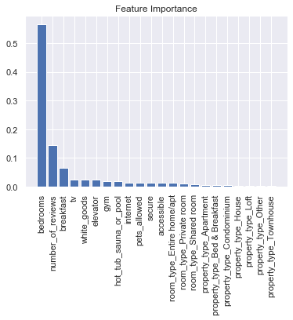 Random Forest is an emsemble technique that is able to perform both Regression and Classification tasks with the use of multiple decision trees and a technique that is called Bootstrap Aggression. The idea behind this technique is to combine multiple decision trees in its prediction rather than replying on individual decision trees. Here, we use the RandomForestRegressor to help predict the price while also finding out the most important variables (i.e features). Importance provides a score that indicates how useful or valuable each feature was in the construction of the boosted decision trees within the model. The more a variable is used to make key decisions with decision trees, the higher its relative importance. As such, feature importance can be used to interpret our data to understand the most important features that define our predictions. In this case, looking at the bar chart above, the predictor variable that is associated with a taller bar means that the variable has a higher importance in the Random Tree Regression Model in predicting price.
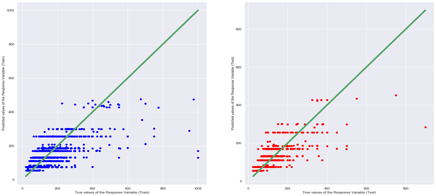XGBoost is an open source library that provides a high-performance implementation of gradient boost decision trees (similar to the decision trees that we have learnt). It is a machine learning model that is able to perform prediction tasks regardless of Regression or Classification. The key idea of Gradient Boosted Decision Trees is that they build a series of trees in which each tree is trained so that it attempts to correct the mistakes of the previous tree in the series.
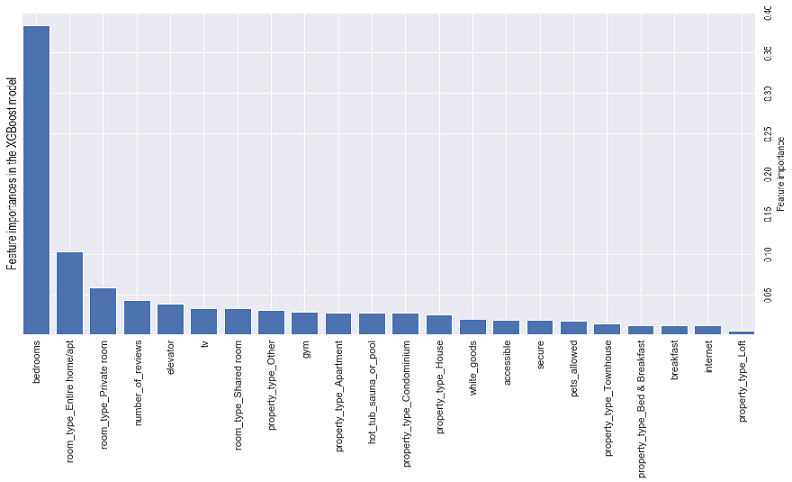 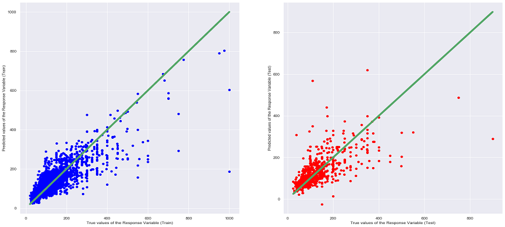CatBoost is a high performance open source gradient boosting on decision trees. It can be used to solve both Classification and Regression problems.
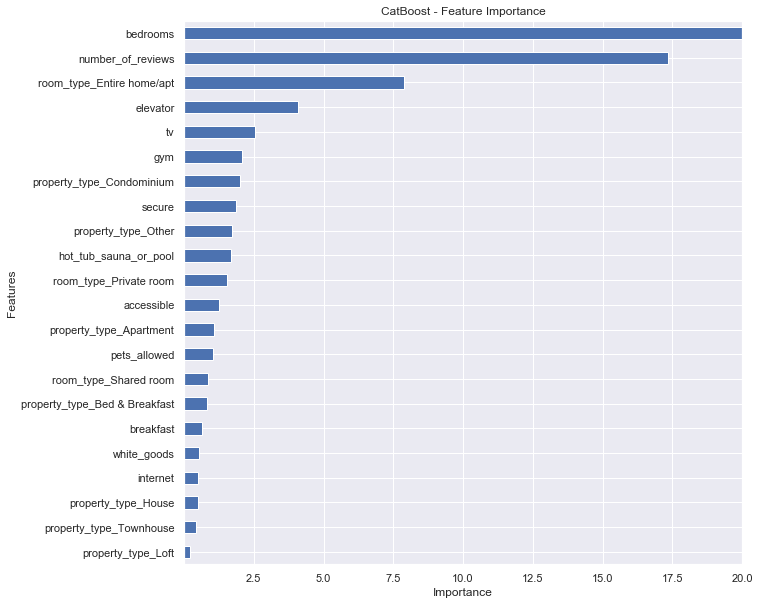Importance provides a score that indicates how useful or valuable each feature was in the construction of the boosted decision trees within the model. The more a variable is used to make key decisions with decision trees, the higher its relative importance. As such, feature importance can be used to interpret our data to understand the most important features that define our predictions. In this case, looking at the bar chart above, the predictor variable that is associated with a longer bar means that the variable has a higher importance in the CatBoost Regression Model in predicting price.
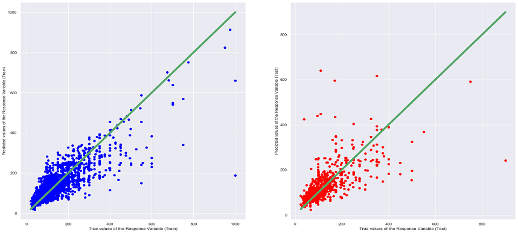Ridge Regression is meant to be an upgrade to linear regression. It is similar to linear regression where it can be used to for regression and classification. Ridge Regression is good at handling overfitting. The difference in the equation for Ridge Regression is that it penalize RSS by adding another term and search for the minimization. We can iterate different 𝜆 values as the additional term to find the best fit for a Ridge Regression model.
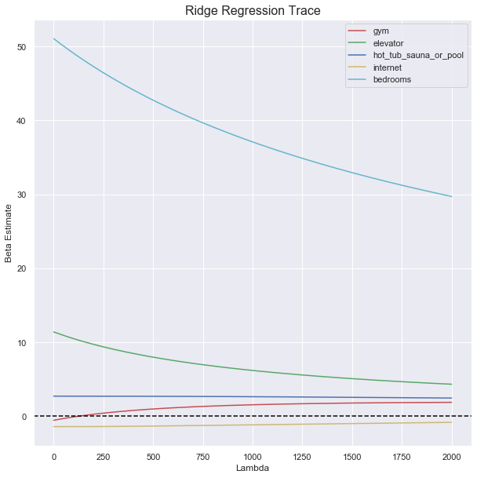From this graph, we can see that the most important predictor among the 5 is bedrooms. For Ridge Regression, the beta estimate of each predictor will converge to zero (but will never reach zero) as lambda increases, the faster it converges to zero,
the less important the predictor is. For this case, the most important predictor is bedrooms. The reason why the beta estimate does not reach zero is because Ridge Regression does not drop any predictors, unlike Lasso Regression, which we will observe later on.
Lasso Regression is similar to Ridge Regression, meant to be an upgrade to linear regression, it also can be used for Regression and Classification. Lasso Regression can be used for feature selection, where some predictors will be cast out after a lambda reaches a certain value. Lasson Regression also requires a 𝜆 value to be iterated to find the best fit.
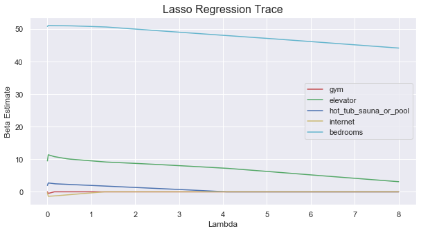From this graph, we can see that the most important predictor among the 5 is also bedrooms. For Lasso Regression, the faster the beta estimate of the predictor reaches zero (the predictor has been dropped) as lambda increases, the less important the predictor is.
As we can see from the graph, bedrooms does not even hit zero after when has reached its highest value of 8, compared to the beta estimate of hot_tub_sauna_or_pool which reached zero a lot faster than bedrooms.
With all the insights gained from exploratory analysis and the machine learning models used,
We can conclude a few this by determining the best model as well as the most important features.
| Regression | Error Type | Error Value |
|---|---|---|
| Linear Regression (Test Set) | Mean Squared Error (MSE) | 3588.0181 |
| Linear Regression (Test Set) | R Squared (R^2) | 0.5173 |
| Random Forest Regression (Test Set) | Mean Squared Error (MSE) | 3466.0835 |
| Random Forest Regression (Test Set) | R Squared (R^2) | 0.5337 |
| XGBoost (Test Set) | Mean Squared Error (MSE) | 4285.6151 |
| XGBoost (Test Set) | R Squared (R^2) | 0.4234 |
| CatBoost (Test Set) | Mean Squared Error (MSE) | 4744.8753 |
| CatBoost (Test Set) | R Squared (R^2) | 0.3616 |
| Ridge Regression (Test Set) | Mean Squared Error (MSE) | 3582.975 |
| Ridge Regression (Test Set) | R Squared (R^2) | 0.518 |
| Lasso Regression (Test Set) | Mean Squared Error (MSE) | 3582.683 |
| Lasso Regression (Test Set) | R Squared (R^2) | 0.518 |
From the table above, it can be seen that the Random Forrest Regression Model has the lowest MSE and highest R^2 values among all the other models. Moreover, when comparing the different graphs of True Values VS Predicting Values for each regression model (can be seen under the heading of the different models), the above conclusion can be said as true as the scatter plot of Random Forrest Regression shows that many of the points are situated near the diagonal line thus being the most accurate. It is also interesting to note that the MSE and R^2 values of the Linear Regression, Ridge Regression and Lasso Regression are very close to each other, this is most probably due to the similarities in the 3 models, as the Ridge and Lasso Regression model are supposed to be an upgraded version of Linear Regression.
However, Random Train/Test Set Splits may not always be enough as it can be subjected to selection biased during the split process (even if its randomly split). This is especially so if the dataset is small. Train/Test Set Splits can also cause over-fitted predicted models that can also affect its performance metrics. As such, to overcome the pitfalls in Train/Test set split evaluation, K-Fold Cross Validation is also performed. Here, the whole dataset is used to calcualte the performance of the regression models. This validation method is more popular simply because it generally results in a less biased or less optimistic estimate of the model.
K-Fold Cross Validation is where the dataset will be split into k number of folds in which each fold is used as a testing point. Here, k=10 was used as it was a value that has been found to generally result in a model skill estimate with low bias and a modest variance. After running the K-Fold Cross Validation, results similar to table above was produced. This confirmed our inital conclusion that Random Forest Regression was the best model used to predict price.
We then did further analysis to find out which feature was the most important in affecting the price of a listing. We first test out its prediction on a specific instance. Then, using a library called TreeInterpreter,
we decompose the Random Forest prediction into a sum of contributions from each feature:
Prediction = Bias + Feature1 x Contribution1 + … + FeatureN x ContributionN.
This will show us how each individual feature contributed in its prediction based on individual results. A positive result would mean that the feature has a positive impact on the prediction while a negative result shows a negative impact.
If the prediction of price is fairly accurate (comparing to its true value), then its contributions of individual features would also be deemed fairly reliable.
When the TreeInterpreter library was run, we found that ammenities such as amenities such as a hot tub/sauna/pool, gym, elevator and the number of bedrooms were the most important in influencing the price of a listing. The code for this analysis as well as the entire project can be found in the jupyter notebook.
From all the analysis done above, we can confidently answer our initial question of the factors that make a listing more expensive. An aspiring Airbnb host, if investing on a new property in Seattle, should focus on the following factors to maximize the price of his listing. Additionally a traveller who wants to pay the lowest possible price for a listing might want to avoid having these features in his prospective housing :
Belltown or West Queen Anne and they tend to be expensive.view, modern & walk all frequently appear in the summary of the more expensive listing.Washer, Dryer, Heating, Wireless Internet, Smoke Detector, Free Parking, Kid Friendly, TV, HotTub/Sauna/Pool, Gyms and Elevators are all common among the more expensive listings.Various technologies and libraries were used throughout the project.
Some of the most frequently used libraries and technologies are listed below.
Scikit-learn was the main library used for machine learning. Most of the regression models were from here.
Matplotlib was mainly used for most of the graph plots and visualizations in the project.
Python's NLTK was used during exploratory analysis to get further insights into the textual data.
XGBoost was one of the libraries used to implement gradient boost decision trees in the project.
CatBoost was another library used to implement gradient boost decision trees in the project.
The TreeInterpreter library was used to decompose predictions into a sum of contributions from each feature.